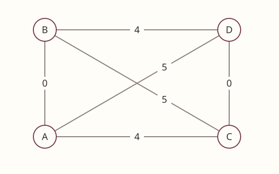
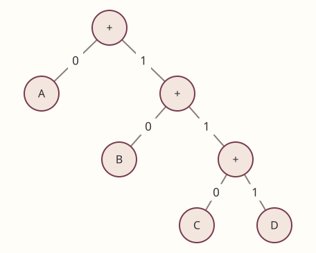

ALGORITHMS 2 · ADVANCED PRACTICE
제5회 모의고사 · 어려움
기출 대비 어려움 · 조건 변형과 복합 추적
60분 · 17문항 · 100점 · 코드 빈칸 8문항. 한국어와 의미가 같은 의사코드 답안을 인정한다. 인덱스는0부터이며 구간·동률·상태 규약은 각 문제를 따른다. 계산기는 실제 공지의 공학용 계산기 허용 조건을 따른다. 빈칸에는 식·조건·문장 등 요구한 단위를 쓴다. 정답은 별도 문서에 있다.
1. 루프 불변식의 시점5점
s=0에서 i=1..n에 대해 s+=i를 실행한다.
① [2점] i번째 덧셈 직전 s,
② [2점] 직후 s를 i의 식으로 쓰시오.
③ [1점] 반복 범위가 유한하다는 사실은 정확성과 별도로 무엇을 보장하는가?
2. 곱셈과 재귀 호출을 구별하기5점
n≥1이고 정수 연산은 상수 시간이다.
① [2점] fast_sum(13)의 인자들을 기저까지 쓰시오.
② [1점] 최초 포함 호출 수,
③ [2점] 타이트한 복잡도를 쓰시오.
def fast_sum(n):
if n == 1: return 1
if n % 2: return fast_sum(n - 1) + n
m = n // 2
return 2 * fast_sum(m) + m * m
3. P·NP와 느슨한 상한5점
① [2점] NP를 다항시간에 풀 수 없는 문제 집합이라고 정의하면 왜 틀리는지 P와의 관계를 포함해 쓰시오.
② [3점] 최악 시간이 Θ(n²)인 알고리즘에 O(n³)라고 쓰는 명제의 참·거짓과 타이트한지 여부를 쓰시오.
4. 합병의 최종 길이와 총비용5점
길이[1,2,3,9,10]을 작은 두 개씩 합친다. 합친 길이는 다시 후보에 넣는다.
① [3점] 매 단계 합친 길이와 총비용,
② [2점] 마지막 길이만 반환하면 틀리는 이유를 쓰시오.
5. BOGGLE의 메모 상태5점
칸 재방문은 허용하고 제자리 이동은 없다. directions는(0,0)을 뺀8방향 오프셋이다. H,W,board,word는 한 질의 동안 고정되고 memo={}로 시작한다. search는 해당 칸에서 word[k:]를 찾는다.
① [2점] 키,
② [2점] 다음 문자열 인덱스,
③ [1점] 1×2 보드 AB에서 ABA가 가능한지 쓰시오.
def search(y, x, k):
if not (0 <= y < H and 0 <= x < W): return False
if board[y][x] != word[k]: return False
if k == len(word) - 1: return True
key = ①＿＿＿＿
if key in memo: return memo[key]
memo[key] = any(search(y + dy, x + dx, ②＿＿＿＿)
for dy, dx in directions)
return memo[key]
6. 절반 거듭제곱의 재사용5점
x는 정수,n≥0이다. 곱셈은 상수 시간이다.
① [2점] 홀수 반환식,
② [1점] 짝수 반환식,
③ [2점] half를 저장하지 않고 같은 재귀를 두 번 호출하면 시간 차수가 어떻게 바뀌는지 쓰시오.
def power(x, n):
if n == 0: return 1
half = power(x, n // 2)
if n % 2: return ①＿＿＿＿
return ②＿＿＿＿
7. FESTIVAL 끝 제외 구간5점
P[t]=sum(A[:t]),1≤L≤len(A)이다. 길이 L 이상의 구간 평균 최솟값을 찾는다.
① [2점] j 시작점,
② [2점] 평균식,
③ [1점] A=[8,1,1,8,1],L=2의 답을 쓰시오.
def festival(A, L):
P = [0]
for x in A: P.append(P[-1] + x)
answer = float('inf')
for i in range(len(A) - L + 1):
for j in range(①＿＿＿＿, len(A) + 1):
answer = min(answer, ②＿＿＿＿)
return answer
8. SST 내부 노드와 스택5점
스위치6개를 각각0..3회 누르는 가지치기 없는 DFS다. 루트 깊이는0이다.
① [2점] 리프와 내부 노드 수,
② [2점] 전체 호출 수와 최대 동시 호출 수,
③ [1점] 같은 스위치를4번 누르면 복구되는 이유를 쓰시오. 제공 공식: 전체=(4^(d+1)−1)/3.
9. LAN 무료 연결과 제곱 거리5점
A=(0,0),B=(0,3),C=(4,0),D=(4,3)이다. 기존 케이블은 A–B와 C–D다.


① [3점] 최소 추가 길이,
② [2점] 제곱 거리로 비교해도 비용 합산 때 필요한 처리를 쓰시오.
10. 삼각형 한 행 DP와 개수10점
삼각형은[3]/[1,1]/[2,0,2]/[1,1,1,1]이다. 위치 경로가 다르면 별개다. D는 최대합,ways는 그 경로 수다.
① [3점] 동률 cnt,
② [3점] D 갱신식,
③ [2점] 최대합,
④ [2점] 최대 경로 수를 쓰시오.
def triangle(T):
D, ways = T[-1][:], [1] * len(T[-1])
for y in range(len(T) - 2, -1, -1):
for x in range(y + 1):
down, right = D[x], D[x + 1]
if down > right: cnt = ways[x]
elif down < right: cnt = ways[x + 1]
else: cnt = ①＿＿＿＿
D[x] = ②＿＿＿＿
ways[x] = cnt
return D[0], ways[0]
11. 공유 iterator와 반전 순서5점
text는 유효한 쿼드트리다.
① [3점] 반환식,
② [2점] q1..q4에 원래 순서로 읽은 결과를 저장해야 하는 이유를 쓰시오.
def flip(text):
it = iter(text)
def read():
head = next(it)
if head != 'x': return head
q1, q2, q3, q4 = read(), read(), read(), read()
return ①＿＿＿＿
return read()
12. 0-1 한 행 DP와 fractional10점
w=[3,4,5],p=[7,9,12],W=7이다. 물건은 하나씩 있다. dp[c]는 용량 c 이하의 최대 가치다.
① [3점] range 인자3개,
② [3점] take 값,
③ [2점] 0-1 최댓값,
④ [2점] 쪼갤 수 있는 fractional 최댓값을 쓰시오.
def pack(w, p, W):
dp = [0] * (W + 1)
for i in range(len(w)):
for c in range(①＿＿＿＿):
dp[c] = max(dp[c], ②＿＿＿＿)
return dp[W]
13. FENCE의 분할 경계5점
h=[1,4,5,5,4,1]이고 구간은[left,right]다. crossing은 mid와mid+1을 모두 포함하는 직사각형의 최대 넓이다.
① [2점] 오른쪽 재귀 시작점,
② [1점] 초기 두 판자의 높이,
③ [2점] 전체 최대 넓이를 쓰시오.
def fence(h, left, right):
if left == right: return h[left]
mid = (left + right) // 2
answer = max(fence(h, left, mid), fence(h, ①＿＿＿＿, right))
return max(answer, crossing(h, left, mid, right))
# crossing의 시작: low, high = mid, mid + 1
# height = ②＿＿＿＿
14. POLY 상태와 첫 행5점
P(n,f)는 n칸 세로단조 폴리오미노 중 첫 행 f칸인 경우 수다. 다음 행 길이가 s이면 붙이는 위치가 f+s−1개다. memo={}로 시작한다.
① [2점] 남은 칸 수,
② [2점] 기저 반환값,
③ [1점] 전체3칸 폴리오미노 수를 쓰시오.
def P(n, f):
if n == f: return ②＿＿＿＿
if (n, f) in memo: return memo[n, f]
total = 0
for s in range(1, n - f + 1):
total += (f + s - 1) * P(①＿＿＿＿, s)
memo[n, f] = total
return total
15. Prim 힙의 중복 후보5점
후보는(간선비용,도착정점,부모)다. T={A,B}이고 힙에는(2,C,A),(1,C,B),(4,D,B),(5,D,A)가 있다. CD=3이며 다른 새 후보는 없다. 정점을 넣을 때 미선택 이웃으로 가는 간선을 push한다. 이미 선택된 정점의 후보는 버린다.
① [2점] 다음 두 실제 선택 정점과 채택 비용,
② [1점] 그 사이에 버리는 후보,
③ [2점] pop할 때마다 무조건 비용을 더하면 틀리는 이유를 쓰시오.
16. tails·개수·k번째 해의 차이5점
S=[3,1,4,2,5,8,6,7]이다. 엄격 증가·인덱스 순서를 지킨다. tails는 bisect_left로 첫>=x 자리를 바꾸는 배열이다.
① [2점] 최종 tails,
② [1점] 전체 LIS 수,
③ [2점] 값 사전순의1-based3번째 LIS를 쓰시오.
17. Huffman 읽기 위치와 트리 해석10점
그림에서 왼쪽0,오른쪽1이다.


① [3점] 011010111의 해독,
② [2점] DCAB의 인코딩,
③ [3점] 잎에 도달한 입력 위치 i에서 루트로 복귀할 때 i와i+1 중 무엇을 넘기는지와 이유,
④ [2점] 내부/전체 노드 수를 쓰시오. 각 내부 노드는 자식이 정확히 둘이다.